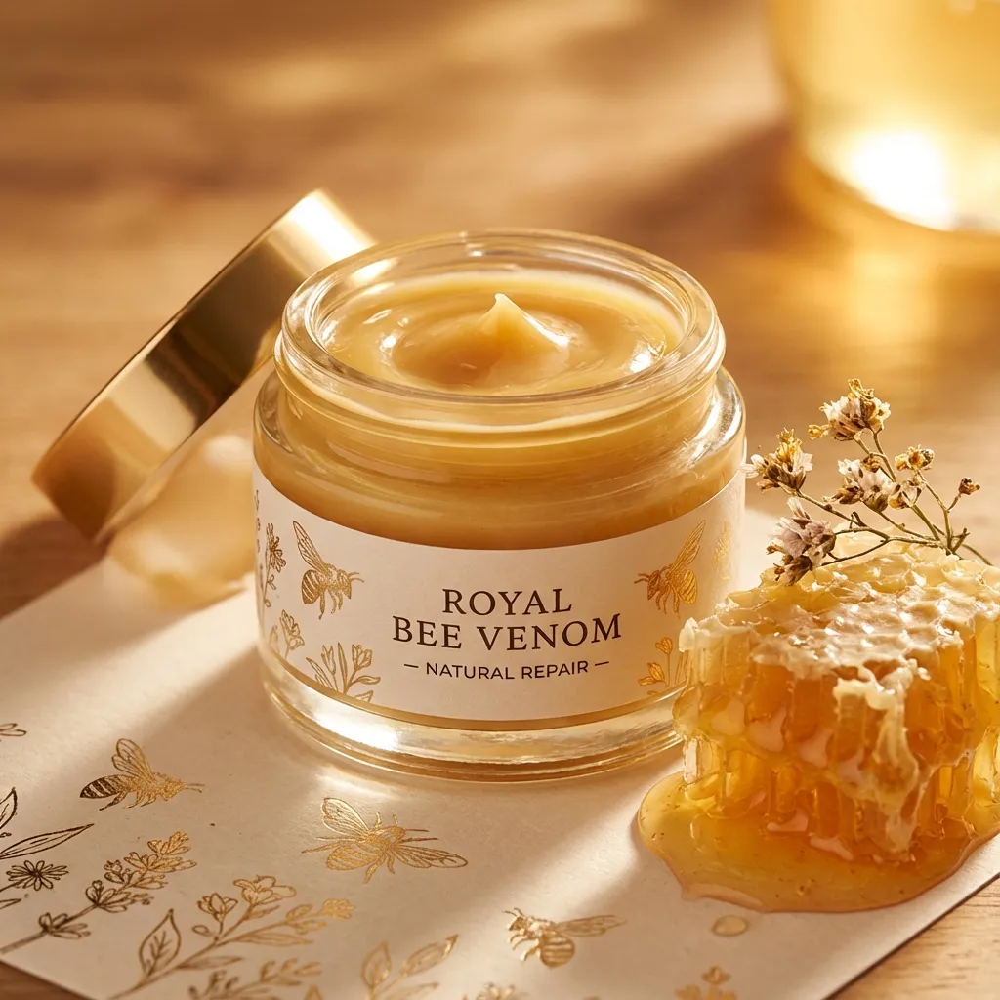
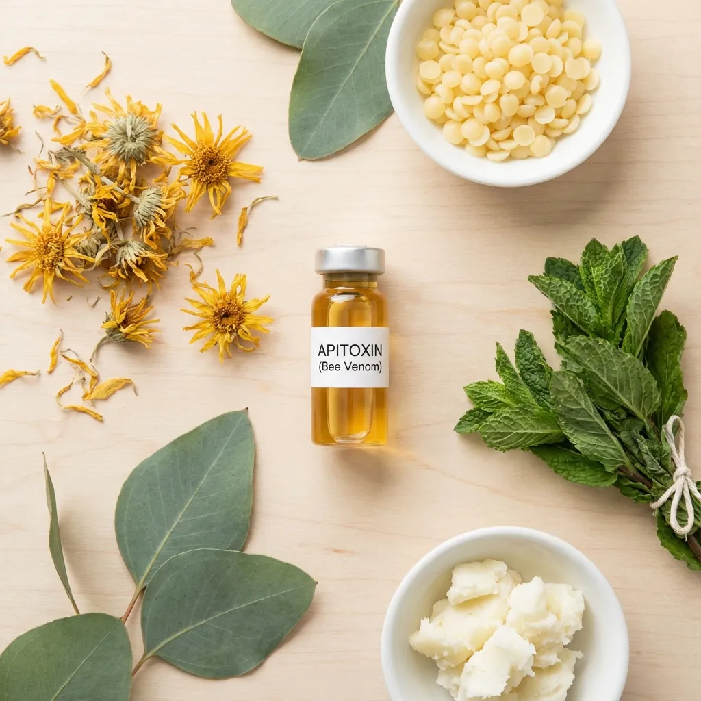

Crema con Veneno de Abeja: Poder Terapéutico de la Apiterapia
La crema con veneno de abeja es un producto terapéutico derivado de la apiterapia, una práctica milenaria que aprovecha los compuestos bioactivos producidos por las abejas. Esta forma de tratamiento tópico ha ganado reconocimiento mundial por sus propiedades antiinflamatorias y regeneradoras naturales, permitiendo acceder a los beneficios del veneno de abeja de manera segura y controlada, sin necesidad de exposición directa a picaduras.
La Ciencia Detrás de la Apiterapia y el Veneno de Abeja
El veneno de abeja, también conocido como apitoxina, es una sustancia compleja que contiene más de 40 componentes activos, incluyendo péptidos, enzimas, aminoácidos y aminas biogénicas. Su componente más estudiado y potente es la melitina, un péptido que posee poderosas propiedades antiinflamatorias y antimicrobianas. Cuando se formula en cremas, la apitoxina mantiene su bioactividad ofreciendo beneficios terapéuticos significativos.

Propiedades y Beneficios Documentados
La investigación moderna y la tradición clínica respaldan múltiples beneficios de las cremas con veneno de abeja para la salud dermatológica y articular [1] [2]:
- Potente acción antiinflamatoria: Reduce notablemente la hinchazón y el dolor en articulaciones (artritis, artrosis) y tejidos blandos.
- Alivio del dolor crónico y agudo: Actúa como un analgésico natural efectivo para molestias musculares y tendinitis.
- Estimulación circulatoria: Mejora el flujo sanguíneo local y la permeabilidad capilar, facilitando la llegada de nutrientes.
- Estimulación de colágeno y elastina: Promueve la regeneración celular, mejorando la firmeza y textura de la piel (efecto anti-aging) [1]
- Propiedades antimicrobianas: Ayuda a proteger la piel contra infecciones bacterianas.
- Modulación inmunológica: Ayuda a regular la respuesta inmune local en la zona de aplicación.
Mecanismo de Acción: ¿Cómo Funciona?
Cuando la crema con veneno de abeja se aplica sobre la piel, los péptidos bioactivos penetran las capas dérmicas desencadenando una cascada de respuestas biológicas beneficiosas:
1. Respuesta Antiinflamatoria Natural: La melitina interactúa con las membranas celulares y estimula al cuerpo a liberar cortisol natural, reduciendo eficazmente la inflamación sin los efectos secundarios de los corticoides sintéticos.
2. Aumento del Flujo Sanguíneo: El veneno dilata los capilares sanguíneos, lo que incrementa la oxigenación de los tejidos y acelera la eliminación de toxinas metabólicas acumuladas que causan dolor.
3. Respuesta Regenerativa: El cuerpo interpreta la presencia de los compuestos del veneno como una "micro-lesión" (sin daño real), activando mecanismos de reparación que aumentan la producción de colágeno y renuevan el tejido dañado.
Usos Terapéuticos Principales
Las cremas con veneno de abeja son versátiles y se utilizan para:
- Salud Articular: Manejo de artritis reumatoide, osteoartritis, bursitis y gotas. Es una alternativa natural comparable a productos especializados como Hondrofrost o Hondro Sol.
- Recuperación Deportiva: Alivio de esguinces, dolores musculares post-entreno y lesiones leves.
- Dermatología Estética: Tratamientos antiarrugas ("botox natural"), reducción de cicatrices, acné y mejora del tono de la piel [2]
Modo de Aplicación y Protocolo Seguro
Para maximizar beneficios y seguridad:
- Prueba de sensibilidad: Antes del primer uso, aplica una pequeña cantidad en el antebrazo y espera 24 horas para descartar reacciones alérgicas.
- Aplicación: Usa sobre piel limpia y seca. Masajea suavemente en movimientos circulares hasta su completa absorción.
- Frecuencia: Generalmente se recomienda aplicar 2 veces al día (mañana y noche). La constancia es clave para resultados a largo plazo.

Diferencia entre Productos del Mercado
No todas las cremas son iguales. Las formulaciones varían en concentración de apitoxina (medida a veces en ppm). Algunos productos de alta calidad combinan el veneno con otros ingredientes sinérgicos como árnica, mentol, glucosamina o aceites esenciales (romero, eucalipto) para potenciar el efecto analgésico y calmante.
Integración en un Estilo de Vida Saludable
Para potenciar la recuperación articular, combina el tratamiento tópico con un enfoque integral:
- Nutrición Interna: Suplementos como Hondrodox o malato de magnesio proveen los "ladrillos" para reconstruir tejidos.
- Equilibrio Hormonal: Hierbas adaptógenas como el shatavari ayudan a modular la inflamación sistémica y el estrés.
- Hidratación y Movimiento: Beber suficiente agua y mantener ejercicio suave mantiene las articulaciones lubricadas y móviles.
Precauciones y Contraindicaciones Importantes
Aunque segura para la mayoría, la crema con veneno de abeja NO debe usarse en:
- Personas con alergia conocida a picaduras de abeja o productos de la colmena.
- Mujeres embarazadas o en período de lactancia (por precaución).
- Niños menores de 12 años sin estricta supervisión médica.
- Heridas abiertas o piel irritada/lesionada.
Referencias Científicas
- Zhao H, Liu M, Chen L, Gong Y, Ma W, Jiang Y. (2025). "Study on the Effect of Bee Venom and Its Main Component Melittin in Delaying Skin Aging in Mice". Int J Mol Sci, 26(2):742. PubMed PMID: 39859456
- An HJ, Kim JY, Kim WH, et al. (2018). "Therapeutic effects of bee venom and its major component, melittin, on atopic dermatitis in vivo and in vitro". Br J Pharmacol, 175(23):4310-4324. PubMed PMID: 30187459